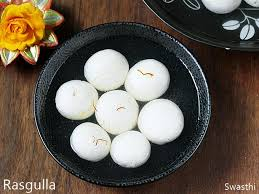

About Indian Sweets
Indian sweets, or "mithai," hold a cherished place in the culinary landscape of India, reflecting the country’s rich cultural heritage and diverse regional flavors. These delightful confections are typically made with ingredients such as milk, sugar, ghee, and a variety of nuts and spices. Each region boasts its own specialty, from the syrup-soaked Gulab Jamun of North India to the dense, nutty Mysore Pak of the South. Indian sweets are not just desserts; they are an integral part of celebrations and festivals, symbolizing joy and togetherness. Whether it's the intricate artistry of Kaju Katli or the comforting familiarity of Jalebi, Indian sweets offer a unique blend of flavors and textures that tantalize the taste buds and evoke a sense of nostalgia, making them beloved by people of all ages.
Popular Sweets Across India
Top 3 Indian Sweets
-
Gulab Jamun - Traditionally served at festive occasions, weddings, and celebrations, Gulab Jamun is not just a dessert; it is a symbol of joy and festivity in Indian culture. The combination of the warm, syrup-soaked dumplings with a hint of aromatic spices makes it a favorite treat that transcends generations, appealing to sweet lovers across the globe.
-
Jalebi - Jalebi is a popular Indian sweet known for its unique spiral shape, vibrant orange color, and crispy texture. Made from a fermented batter of all-purpose flour and yogurt, the batter is piped into hot oil in intricate, circular patterns and deep-fried until golden. Once fried, the jalebi is immediately soaked in a warm sugar syrup. Jalebi is particularly cherished for its contrasting textures—crispy on the outside and juicy on the inside. It is best enjoyed warm, sometimes accompanied by milk or yogurt, enhancing its delightful sweetness.

- Rasgulla - The name "rasgulla" comes from the Bengali words "ras," meaning juice, and "gulla," meaning ball, aptly describing this delectable treat. Rasgulla is often served chilled, making it a refreshing dessert, especially during warm weather. Its lightness and subtle sweetness make it a favorite among sweet lovers, and it holds a special place in festive celebrations, weddings, and cultural gatherings. 
Regional Sweet Specialties
Famous Regional Sweets
- Laddu - The preparation of laddus involves roasting the flour until golden brown, then mixing it with sugar and ghee to form a dough. This mixture is then shaped into small balls, which can be garnished with chopped nuts or dried fruits for added flavor and texture. Laddus are often associated with festivals and celebrations, such as Diwali or Ganesh Chaturthi, where they are prepared as offerings or shared with family and friends.
- Mysore Pak - Mysore Pak is a traditional Indian sweet originating from the city of Mysore in Karnataka. Known for its rich, melt-in-the-mouth texture, this dessert is made primarily from gram flour (besan), ghee (clarified butter), and sugar. The preparation involves roasting the gram flour in ghee to enhance its flavor, then mixing it with a sugar syrup to create a smooth, decadent mixture. Once cooked to perfection, the mixture is poured into a tray and allowed to set before being cut into squares or diamond shapes. Mysore Pak is celebrated for its indulgent taste and is often prepared during festivals, special occasions, and family celebrations, making it a beloved delicacy among those who enjoy Indian sweets.
- Sandesh - Sandesh is a popular Bengali sweet delicacy made from fresh chhena (Indian cottage cheese) and is known for its light, delicate texture and delightful sweetness. Originating from West Bengal, this traditional dessert is often flavored with cardamom or saffron and can be molded into various shapes, often adorned with slivers of pistachios or almonds. The process of making sandesh involves curdling milk, straining it to obtain chhena, and then kneading it into a smooth dough. It can be served plain or with fillings, such as coconut or khoya, and is sometimes coated with a layer of chocolate or flavored with different essences. Sandesh is not only a favorite during festivals and celebrations but also serves as a symbol of Bengali culture and culinary heritage, cherished for its simplicity and exquisite taste.
List of Indian Festival Sweets
- Kaju Katli - Kaju Katli, also known as Kaju Burfi, is a delectable Indian sweet made primarily from cashew nuts (kaju) and sugar. Renowned for its rich flavor and smooth texture, Kaju Katli is often prepared during festivals and special occasions like Diwali and weddings. The process begins with grinding roasted cashews into a fine powder, which is then combined with sugar and cooked on low heat to form a dough-like consistency. The mixture is rolled out into thin sheets and cut into diamond-shaped pieces, often garnished with a thin layer of edible silver leaf (varak) for a touch of elegance. With its melt-in-the-mouth quality and subtle sweetness, Kaju Katli is a favorite among sweet lovers and is celebrated for its simplicity and luxurious taste, making it a cherished part of Indian confectionery.
- Peda - Peda is a traditional Indian sweet that hails primarily from the regions of Maharashtra and Uttar Pradesh. Made from condensed milk or khoya (reduced milk), sugar, and flavored with cardamom, this delectable treat is often shaped into small, round or flat discs. The preparation involves cooking khoya until it thickens and then mixing in sugar and flavorings. Once the mixture cools, it is molded into desired shapes and often garnished with nuts like pistachios or almonds for added texture and flavor. Peda is known for its rich and creamy taste, making it a popular choice during festivals, celebrations, and religious occasions. Variants of peda, such as chocolate peda or besan peda, have also gained popularity, showcasing the versatility of this beloved Indian sweet. Its delightful taste and melt-in-the-mouth consistency make peda a favorite among sweet enthusiasts across India.
- Barfi - Barfi is a popular Indian sweet that is known for its rich flavor and diverse range of varieties. Made from condensed milk, sugar, and various flavorings, barfi can be prepared using a variety of ingredients such as khoya (reduced milk), besan (gram flour), or even nuts like cashews and almonds. The preparation involves cooking the base ingredients until they reach a thick, fudge-like consistency, after which the mixture is spread onto a flat surface to cool and set. Once set, barfi is cut into squares or diamond shapes and can be garnished with a sprinkle of edible silver leaf (varak) or chopped nuts for added visual appeal.